Atlas klime · Köppen-Geigerova klasifikacija · 1901–2099Climate atlas · Köppen-Geiger classification · 1901–2099
Klima Bosne i Hercegovine
od 1901. do 2099.The climate of Bosnia and Herzegovina
from 1901 to 2099
Do 1990. godine 84 % zemlje imalo je kontinentalnu klimu s hladnim zimama. U periodu 1991–2020 taj udio je pao na 41 %. Do kraja vijeka umjereno topla klima s vrućim ljetom, kakvu danas imaju Posavina i Semberija, mogla bi prekriti između 44 % i 90 % zemlje. Zime postaju kraće i blaže, a ljeta duža, toplija i suša.
Until 1990, 84 % of the country had a continental climate with cold winters. In 1991–2020 that share fell to 41 %. By the end of the century the warm temperate climate with hot summers that Posavina and Semberija have today could cover between 44 % and 90 % of the country. Winters are becoming shorter and milder; summers longer, hotter and drier.
Udio klimatskih tipova u površini BiHShare of climate types in the area of BiH
Zagrijavanje između 1961–1990 i 1991–2020, prosjek za BiH (9,1 → 10,3 °C).
Warming between 1961–1990 and 1991–2020, BiH average (9.1 → 10.3 °C).
Vrućih dana (≥ 30 °C) godišnje: danas i do 2071–2099 prema SSP5-8.5. Prema SSP1-2.6: 34.
Hot days (≥ 30 °C) per year: today and by 2071–2099 under SSP5-8.5. Under SSP1-2.6: 34.
Stanovnika koji žive sa 60 ili više vrućih dana godišnje: danas i do 2071–2099 prema SSP5-8.5.
Residents living with 60 or more hot days a year: today and by 2071–2099 under SSP5-8.5.
Ljetnih padavina do 2071–2099 prema SSP5-8.5. Zimi padavine blago rastu.
Summer precipitation by 2071–2099 under SSP5-8.5. Winter precipitation rises slightly.
Prvi dioPart one
Klimatski tipoviClimate types
Köppen-Geigerova klasifikacija dijeli klimu prema temperaturi i padavinama kroz godinu.
The Köppen-Geiger classification groups climates by temperature and precipitation through the year.
Opažanja 1901–2020Observations 1901–2020
Najveća promjena već se dogodilaThe biggest change has already happened
Tri perioda do 1990. godine izgledaju gotovo isto: kontinentalna klima (Dfb) pokriva veći dio zemlje, a topliji tipovi drže se Posavine, Semberije i Hercegovine. U periodu 1991–2020 umjereno topla klima (Cfa i Cfb) zauzima sjever, doline i niže predjele centralne Bosne.
The three periods up to 1990 look almost the same: continental climate (Dfb) covers most of the country, and the warmer types stay in Posavina, Semberija and Herzegovina. In 1991–2020 warm temperate climate (Cfa and Cfb) takes over the north, the valleys and the lower parts of central Bosnia.
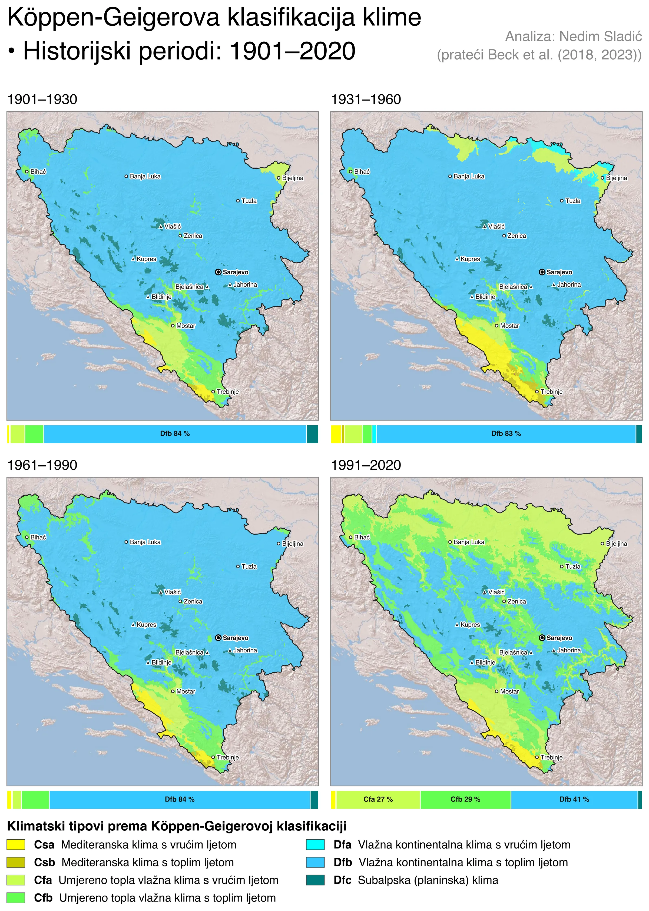
Sedam SSP scenarijaSeven SSP scenarios
Kako bi klima mogla izgledatiWhat the climate could look like
Scenariji zajedničkih socioekonomskih puteva (SSP) opisuju različite budućnosti emisija, od SSP1-1.9, u kojem se globalno zagrijavanje zaustavlja blizu 1,5 °C, do SSP5-8.5 s vrlo visokim emisijama. Prva karta u svakoj slici je referentni period 1991–2020.
Shared Socioeconomic Pathways (SSPs) describe different emission futures, from SSP1-1.9, where global warming stops near 1.5 °C, to SSP5-8.5 with very high emissions. The first map in each figure is the 1991–2020 reference.
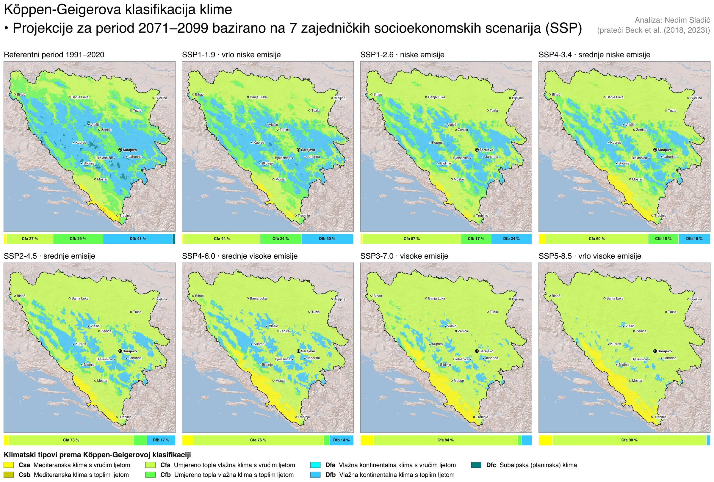
Prije i poslijeBefore and after
Povucite klizačDrag the slider
Lijevo je klima 1991–2020, desno projekcija za 2071–2099 prema odabranom scenariju.
On the left the 1991–2020 climate, on the right the 2071–2099 projection for the chosen scenario.
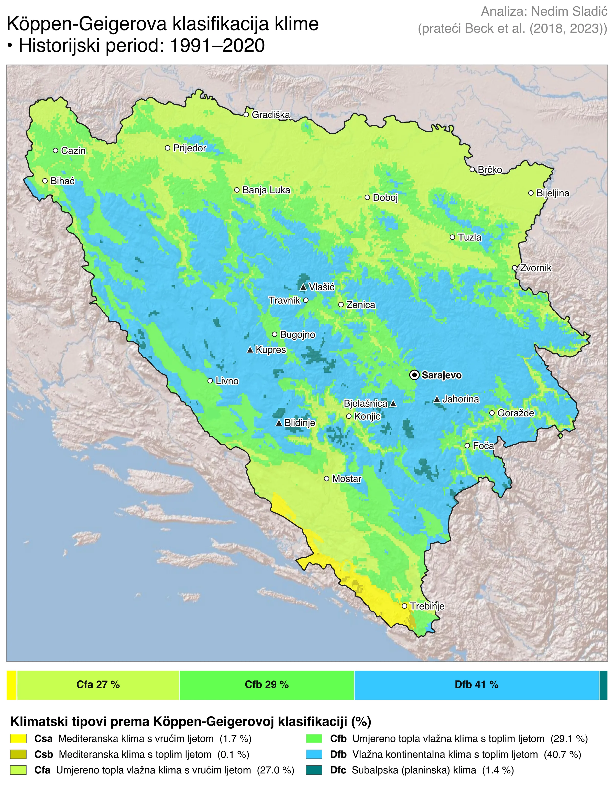
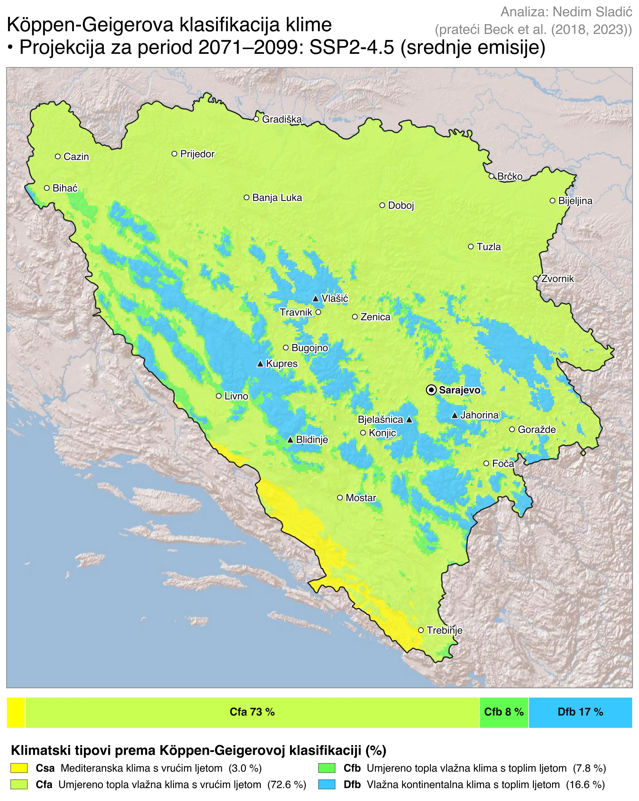
1991–20202071–2099 · SSP2-4.51901 → 2099
Klima u pokretuClimate in motion
Šest perioda jedan za drugim, s udjelom klimatskih tipova ispod karte. GIF verziju možete preuzeti i podijeliti.
Six periods one after another, with climate type shares below the map. You can download the GIF and share it.


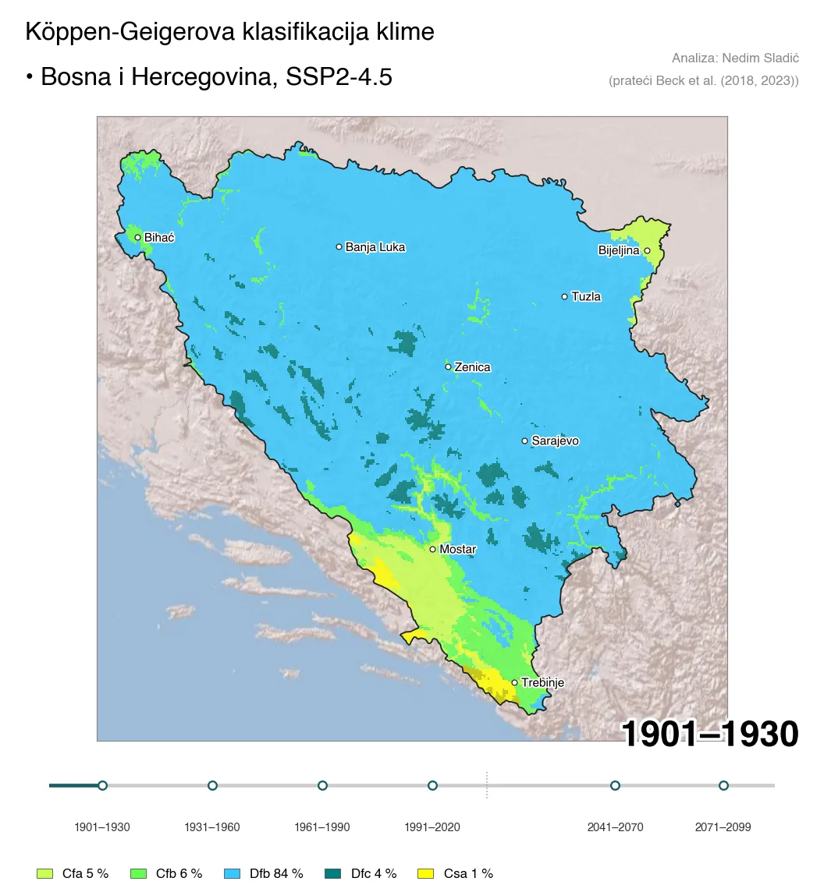
U odnosu na 1991–2020Compared with 1991–2020
Gdje se klimatski tip mijenjaWhere the climate type changes
Siva boja znači da tip ostaje isti kao danas; boja pokazuje novi tip. Sjever je siv u svim scenarijima jer već danas ima klimu Cfa. Promjene su najveće u centralnoj Bosni i na planinama.
Grey means the type stays as it is today; colour shows the new type. The north stays grey in every scenario because it already has a Cfa climate. Changes are largest in central Bosnia and in the mountains.
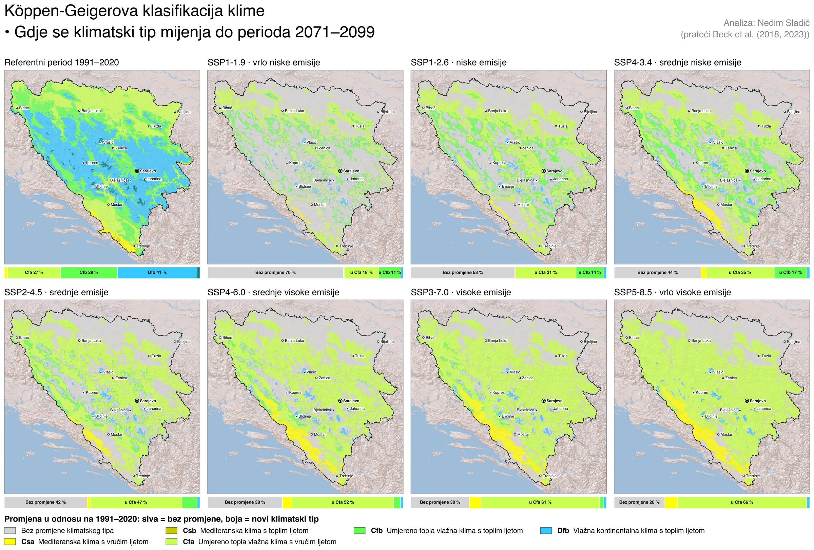
BiH i zemlje regijeBiH and the region
Isti trend u cijeloj regijiThe same trend across the region
Kontinentalna klima povlači se u cijeloj regiji, od Slovenije do Sjeverne Makedonije. Prema SSP5-8.5 do 2071–2099 Srbija bi bila 99 % Cfa, Slovenija 94 %, a BiH 90 %. Mediteranska klima (Csa) širi se uz obalu i u unutrašnjost: na 22 % Hrvatske, 20 % Crne Gore, 23 % Kosova i 88 % Albanije. U Sjevernoj Makedoniji javlja se i vruća stepska klima (BSh), koje danas u regiji nema.
Continental climate is retreating across the whole region, from Slovenia to North Macedonia. Under SSP5-8.5 by 2071–2099 Serbia would be 99 % Cfa, Slovenia 94 % and BiH 90 %. Mediterranean climate (Csa) spreads along the coast and inland: to 22 % of Croatia, 20 % of Montenegro, 23 % of Kosovo and 88 % of Albania. North Macedonia also gains hot steppe climate (BSh), which does not exist in the region today.
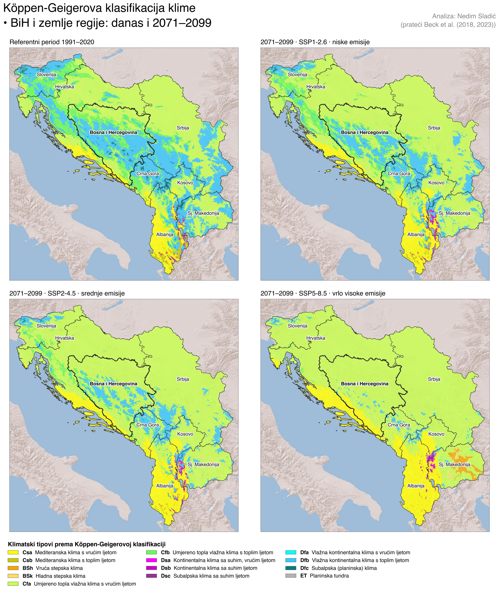
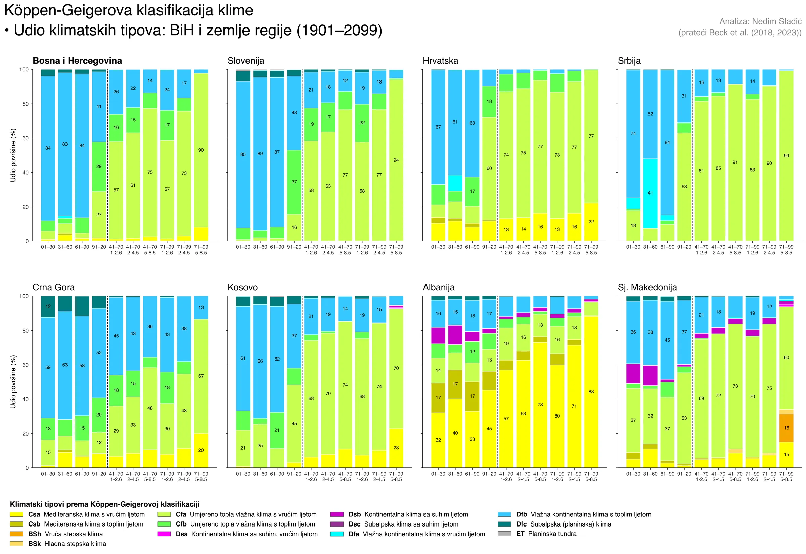
Drugi dioPart two
Temperatura i padavineTemperature and precipitation
Prosjeci, godišnja doba, ekstremni dani i ljetni manjak vode.
Averages, seasons, extreme days and the summer water deficit.
Prosjek za teritoriju BiHAverage for BiH
Srednja temperaturaMean temperature
Srednja godišnja temperatura bila je oko 9 °C sve do 1990. godine, a u periodu 1991–2020 porasla je na 10,3 °C. Do 2071–2099 mogla bi iznositi 11,2 °C (SSP1-1.9), 12,6 °C (SSP2-4.5) ili 14,6 °C (SSP5-8.5). Ljeta se zagrijavaju brže od zima: u avgustu do +6,3 °C prema SSP5-8.5.
Osjenčeni pojas i crtice pokazuju raspon među klimatskim modelima (±1 standardna devijacija ansambla). Do 2071–2099 on iznosi oko ±0,8 °C za SSP2-4.5 i ±1,1 °C za SSP5-8.5; razlika između scenarija je veća od nesigurnosti modela.
Mean annual temperature was about 9 °C until 1990 and rose to 10.3 °C in 1991–2020. By 2071–2099 it could reach 11.2 °C (SSP1-1.9), 12.6 °C (SSP2-4.5) or 14.6 °C (SSP5-8.5). Summers warm faster than winters: up to +6.3 °C in August under SSP5-8.5.
The shaded band and whiskers show the spread among climate models (±1 standard deviation of the ensemble). By 2071–2099 it is about ±0.8 °C under SSP2-4.5 and ±1.1 °C under SSP5-8.5; the difference between scenarios is larger than the model uncertainty.
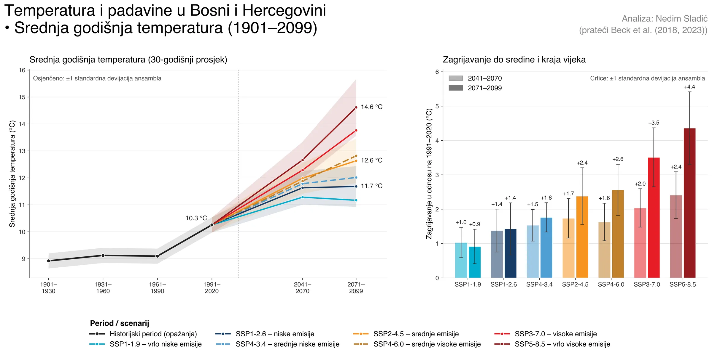
Zima (DJF) i ljeto (JJA)Winter (DJF) and summer (JJA)
Zima i ljetoWinter and summer
Srednja zimska temperatura bila je oko 0 °C u periodu 1961–1990 i 0,9 °C u periodu 1991–2020. Do 2071–2099 mogla bi iznositi 2,2 °C (SSP1-2.6), 3,1 °C (SSP2-4.5) ili 4,7 °C (SSP5-8.5). Ljeto je s 17,7 °C poraslo na 19,5 °C, a prema SSP5-8.5 dostiglo bi 25,3 °C. Zimi padavine rastu za 3–7 %, a ljeti opadaju za 5–23 %.
Mean winter temperature was about 0 °C in 1961–1990 and 0.9 °C in 1991–2020. By 2071–2099 it could be 2.2 °C (SSP1-2.6), 3.1 °C (SSP2-4.5) or 4.7 °C (SSP5-8.5). Summer rose from 17.7 °C to 19.5 °C and would reach 25.3 °C under SSP5-8.5. Winter precipitation rises 3–7 %; summer precipitation falls 5–23 %.
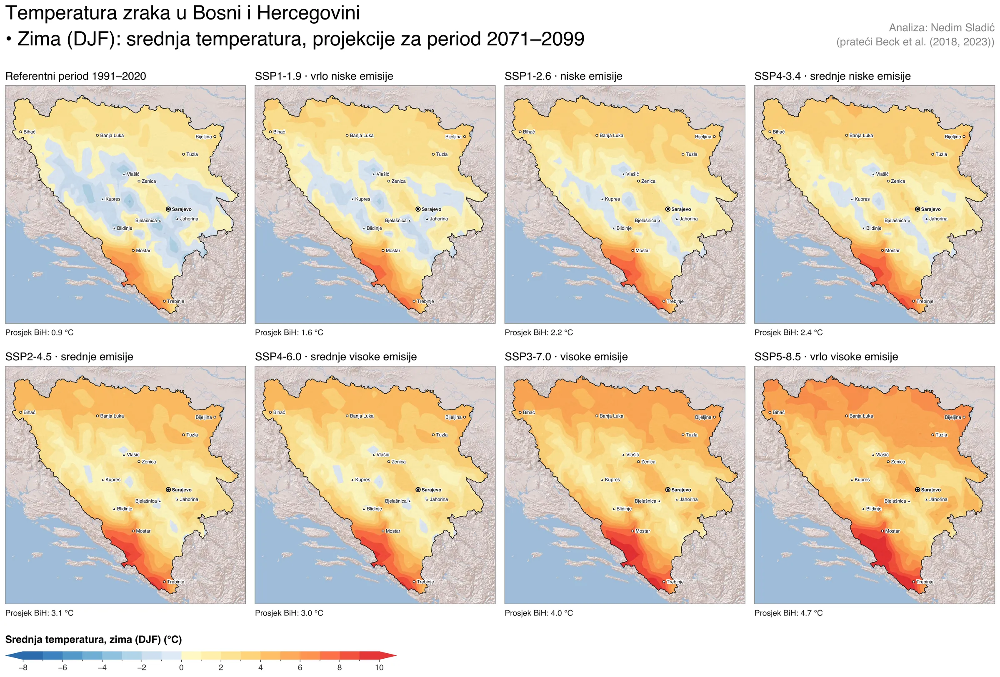
Dnevne temperatureDaily temperatures
Hladni i vrući daniCold and hot days
Mrazni dan ima najnižu temperaturu ispod 0 °C, a ledeni dan najvišu ispod 0 °C. Vrući dan ima najvišu temperaturu od najmanje 30 °C, a vrlo vrući dan od najmanje 35 °C. U periodu 1991–2020 BiH je u prosjeku imala 92 mrazna i 21 vrući dan godišnje; do 2071–2099 to bi bilo 73 i 34 prema SSP1-2.6, odnosno 43 i 71 prema SSP5-8.5.
A frost day has a minimum below 0 °C, an ice day a maximum below 0 °C. A hot day reaches at least 30 °C, a very hot day at least 35 °C. In 1991–2020 BiH averaged 92 frost days and 21 hot days a year; by 2071–2099 that would be 73 and 34 under SSP1-2.6, or 43 and 71 under SSP5-8.5.
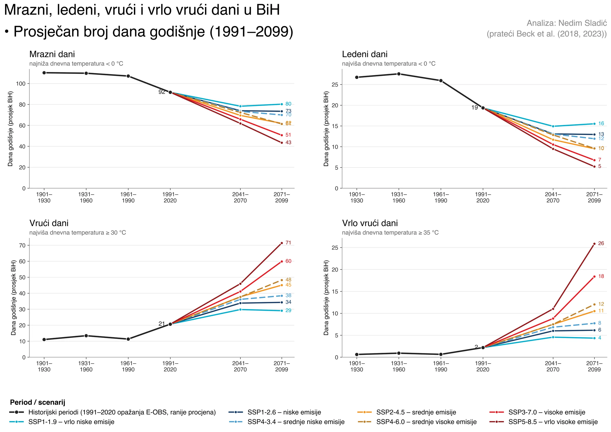
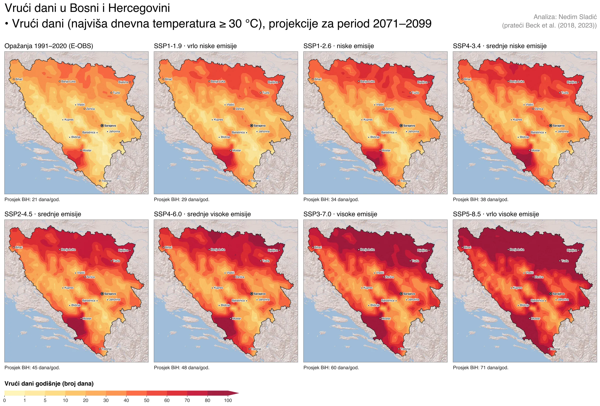
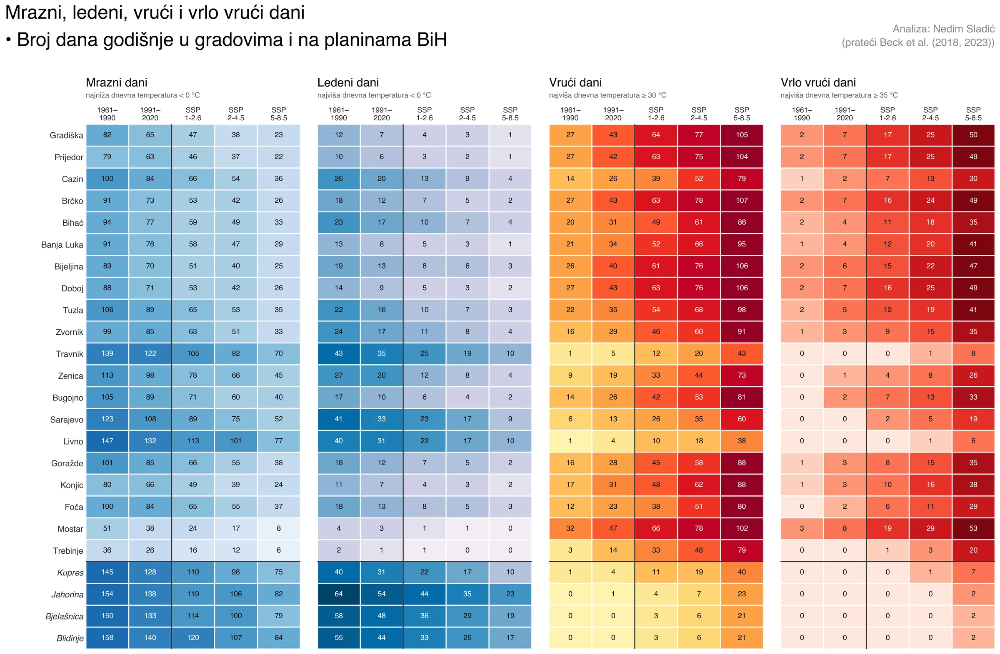
Noći, energija i snijegNights, energy and snow
Tropske noći, grijanje, hlađenje i snijegTropical nights, heating, cooling and snow
Tropska noć ima najnižu temperaturu od najmanje 20 °C. BiH ih danas ima u prosjeku 2 godišnje, a do 2071–2099 imala bi 7 (SSP1-2.6), 14 (SSP2-4.5) ili 42 (SSP5-8.5); Mostar i Trebinje oko 90, Banja Luka 57.
Stepen-dani grijanja mjere potrebu za grijanjem (Eurostat): padaju s 2961 na 1985 godišnje prema SSP5-8.5 (−33 %). Stepen-dani hlađenja mjere potrebu za klimatizacijom i rastu s 56 na 446, gotovo osam puta. Dana sa snijegom (procjena) bilo bi 11 umjesto 15 prema SSP1-2.6 i 5 prema SSP5-8.5; Jahorina s 40 na 21.
A tropical night stays at 20 °C or above. BiH averages 2 a year today; by 2071–2099 it would have 7 (SSP1-2.6), 14 (SSP2-4.5) or 42 (SSP5-8.5), with about 90 in Mostar and Trebinje and 57 in Banja Luka.
Heating degree days measure heating demand (Eurostat definition): they fall from 2961 to 1985 a year under SSP5-8.5 (−33 %). Cooling degree days measure air-conditioning demand and rise from 56 to 446, almost eightfold. Snow days (estimated) fall from 15 to 11 under SSP1-2.6 and to 5 under SSP5-8.5; Jahorina from 40 to 21.
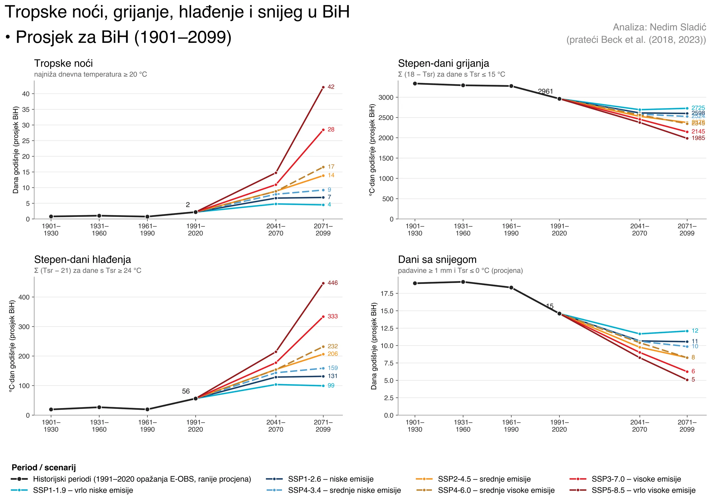
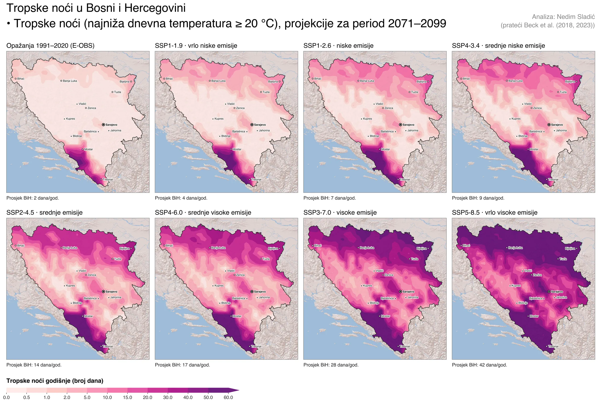
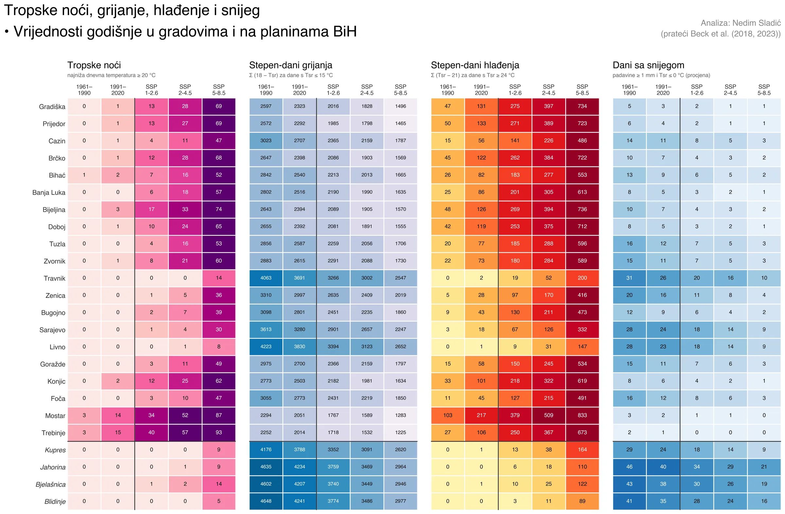
Najmanje 3 dana ≥ 30 °CAt least 3 days ≥ 30 °C
Toplotni talasiHeatwaves
Toplotni talas je niz od najmanje tri uzastopna dana s najvišom temperaturom od 30 °C ili više. U periodu 1991–2020 BiH je u prosjeku imala 2,8 talasa i 16 dana u talasima godišnje, a najduži talas u godini trajao je 6 dana. Do 2071–2099 bilo bi to 28 dana i 10 dana najdužeg talasa prema SSP1-2.6, odnosno 65 dana i 24 dana prema SSP5-8.5.
A heatwave is a run of at least three consecutive days with a maximum of 30 °C or more. In 1991–2020 BiH averaged 2.8 heatwaves and 16 heatwave days a year, and the longest heatwave of the year lasted 6 days. By 2071–2099 that would be 28 days and a 10-day longest heatwave under SSP1-2.6, or 65 days and 24 days under SSP5-8.5.
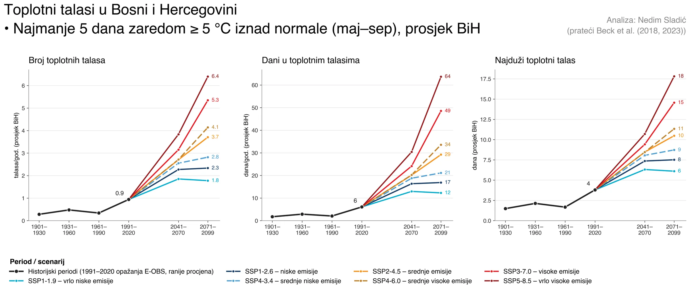
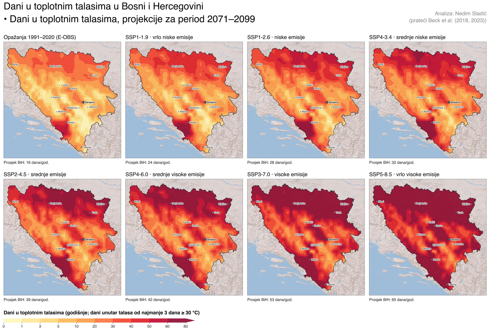
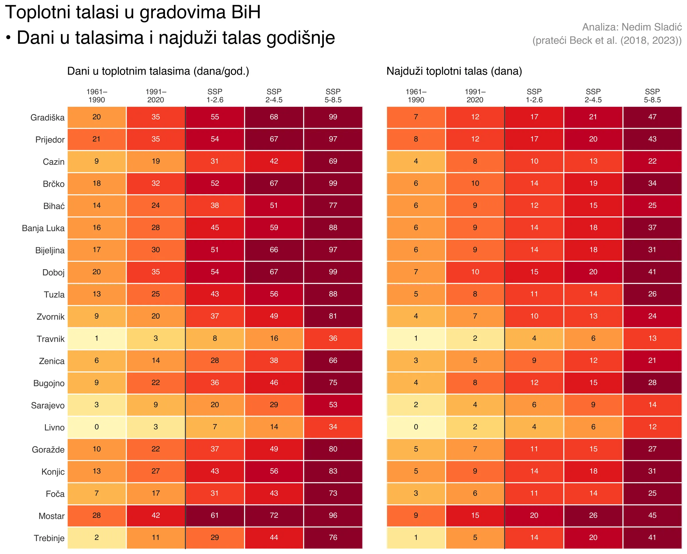
Dnevne padavineDaily precipitation
Kišni dani i jake padavineRain days and heavy precipitation
BiH u prosjeku ima 111 dana godišnje s najmanje 1 mm padavina, 35 dana s najmanje 10 mm i 7 dana s najmanje 20 mm. Do 2071–2099 broj dana s najmanje 10 mm mogao bi pasti na 29 prema SSP5-8.5, uglavnom zbog suših ljeta.
BiH averages 111 days a year with at least 1 mm of precipitation, 35 with at least 10 mm and 7 with at least 20 mm. By 2071–2099 the days with at least 10 mm could fall to 29 under SSP5-8.5, mainly because of drier summers.
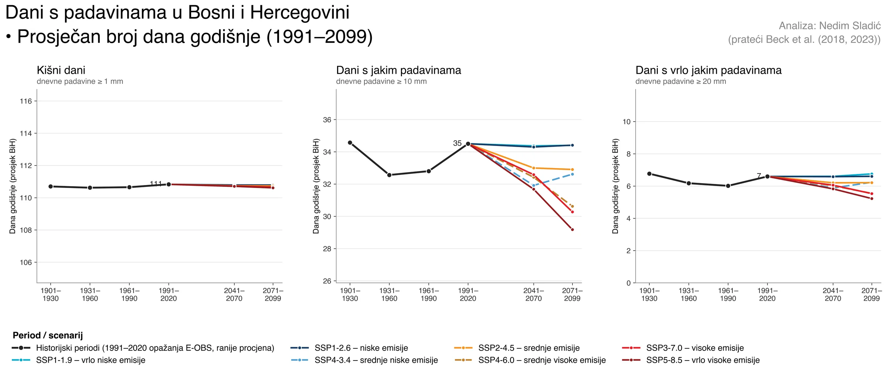
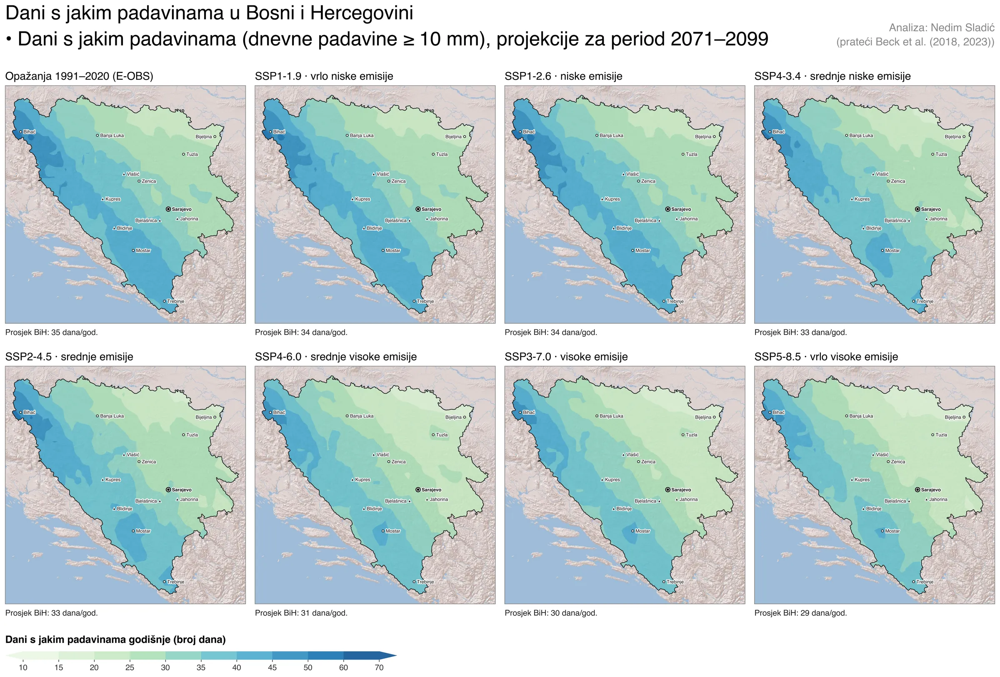
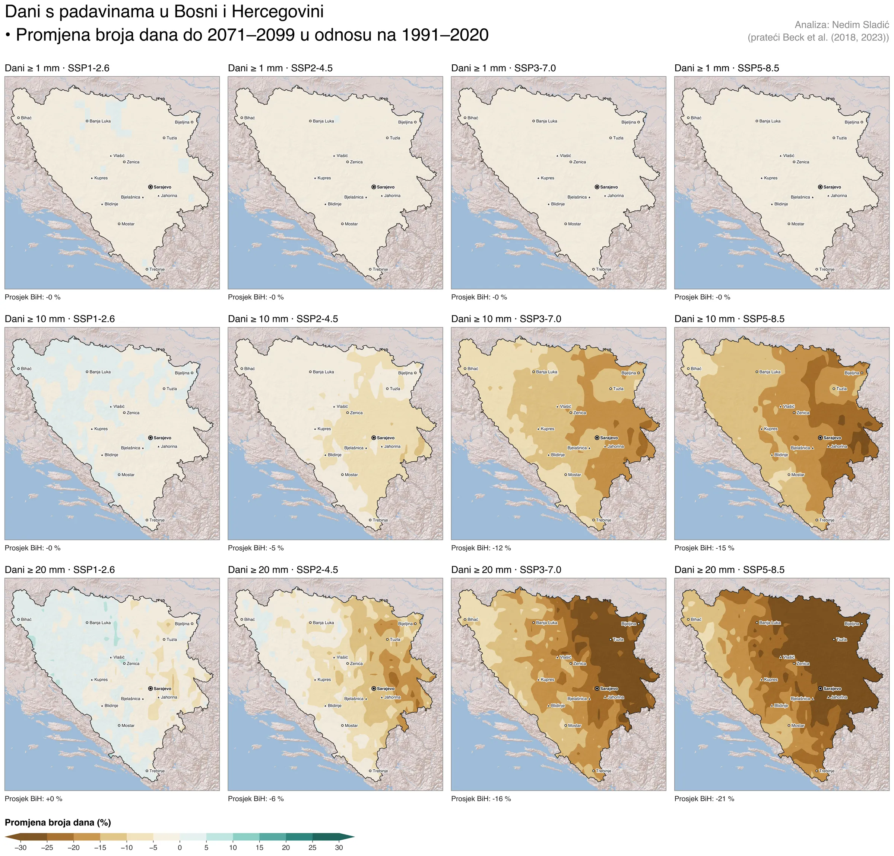
Ljeto (JJA)Summer (JJA)
Ljetni vodni bilansSummer water balance
Vodni bilans je razlika između padavina (P) i potencijalnog isparavanja (PET). Kad je negativan, tlo i biljke gube više vode nego što dobiju. Ljetni manjak u BiH porastao je s −55 mm (1961–1990) na −105 mm (1991–2020), a do 2071–2099 bio bi −159 mm (SSP1-2.6), −201 mm (SSP2-4.5) ili −292 mm (SSP5-8.5). Isparavanje raste, a padavine opadaju.
The water balance is precipitation (P) minus potential evapotranspiration (PET). When negative, soil and plants lose more water than they receive. The summer deficit in BiH grew from −55 mm (1961–1990) to −105 mm (1991–2020) and by 2071–2099 would reach −159 mm (SSP1-2.6), −201 mm (SSP2-4.5) or −292 mm (SSP5-8.5): evaporation rises while rain falls.
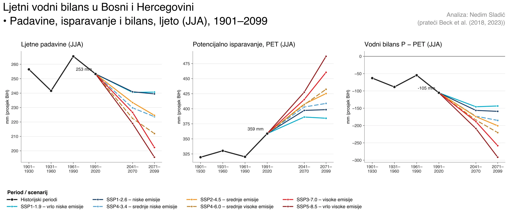
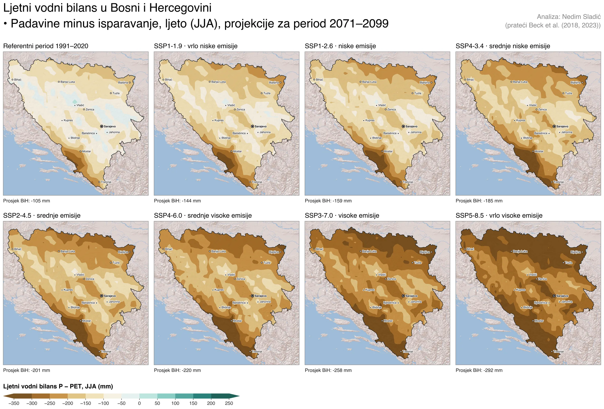
Treći dioPart three
Ljudi i mjestaPeople and places
Koliko ljudi to osjeti, kako će se osjećati gradovi i šta se mijenja u svakoj općini.
How many people feel it, what cities will feel like, and what changes in every municipality.
21.313 naselja21,313 settlements
Moje mjestoMy place
Upišite naziv grada ili sela. Klimatski tip je s karte od 1 km, a temperatura i dani iz mreže od oko 10 km.
Type the name of a town or village. The climate type comes from the 1 km map; temperature and days from a ~10 km grid.
Stanovništvo 2020Population 2020
Izloženost vrućinamaExposure to heat
Danas oko 2 % stanovnika živi u mjestima sa 60 ili više vrućih dana godišnje. Do 2071–2099 bilo bi to 23 % prema SSP1-2.6, 57 % prema SSP2-4.5 i 91 % prema SSP5-8.5. Prosječan stanovnik BiH imao bi 47, 60 ili 88 vrućih dana umjesto današnjih 31.
Today about 2 % of residents live where there are 60 or more hot days a year. By 2071–2099 that would be 23 % under SSP1-2.6, 57 % under SSP2-4.5 and 91 % under SSP5-8.5. The average resident would have 47, 60 or 88 hot days instead of 31 today.
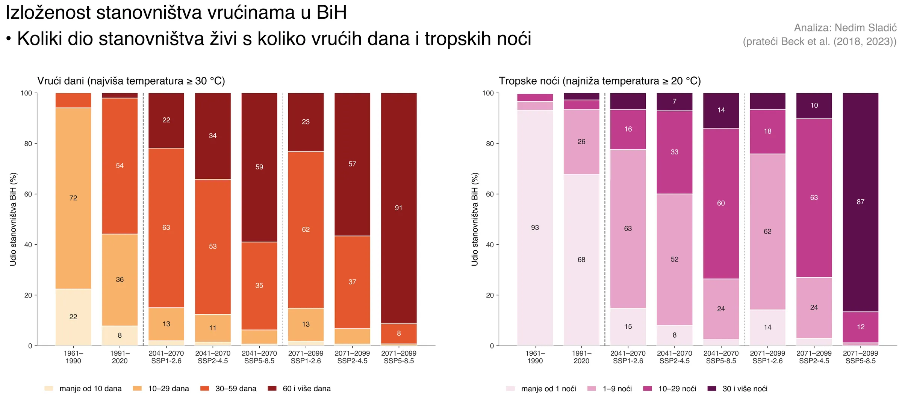
Gradovi s istom klimomCities with the same climate
Klimatski blizanciClimate twins
Za svaki grad u BiH tražili smo grad u Evropi i na Mediteranu koji danas ima klimu kakvu bi taj grad mogao imati. Prema SSP5-8.5 do 2071–2099 Banja Luka i Zvornik bi imali klimu današnje Venecije, Tuzla, Brčko i Doboj Bologne, Sarajevo i Zenica Prizrena, a Mostar i Trebinje Skadra. Prema SSP2-4.5 blizanci su većinom bliži: Treviso, Podgorica ili topliji gradovi u BiH.
For every city in BiH we looked for the city in Europe or the Mediterranean that has its possible future climate today. Under SSP5-8.5 by 2071–2099, Banja Luka and Zvornik would have the climate of today's Venice, Tuzla, Brčko and Doboj that of Bologna, Sarajevo and Zenica that of Prizren, and Mostar and Trebinje that of Shkodër. Under SSP2-4.5 the twins are mostly closer: Treviso, Podgorica or warmer cities within BiH.
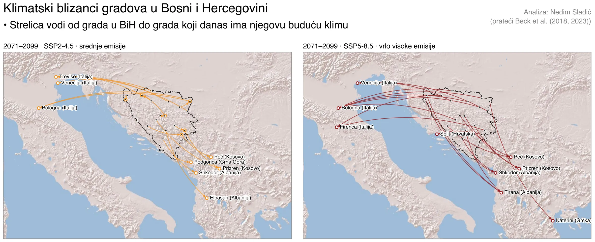
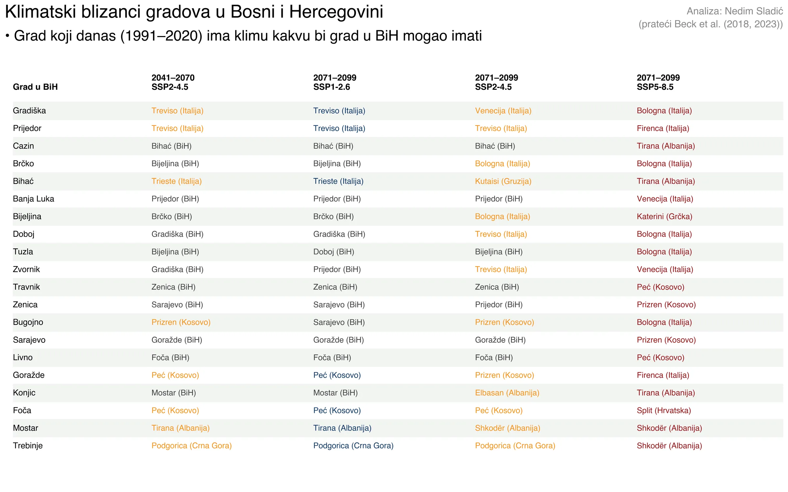
142 općine i grada142 municipalities
Klima vaše općineThe climate of your municipality
Odaberite pokazatelj, period i scenarij, pa kliknite na općinu ili je izaberite s liste.
Choose an indicator, period and scenario, then click a municipality or pick it from the list.
Klimatski tipovi kroz vrijemeClimate types over time
20 gradova i 5 planinskih centara20 cities and 5 mountain centres
Gradovi i planineCities and mountains
Banja Luka, Tuzla i Doboj prešli su iz Dfb u Cfa već u periodu 1991–2020. Sarajevo, Travnik, Bugojno i Livno to čine do sredine vijeka u gotovo svim scenarijima. Bjelašnica i Vlašić u većini scenarija gube subalpsku klimu (Dfc).
Banja Luka, Tuzla and Doboj already moved from Dfb to Cfa in 1991–2020. Sarajevo, Travnik, Bugojno and Livno follow by mid-century in almost every scenario. Bjelašnica and Vlašić lose their subalpine climate (Dfc) in most scenarios.
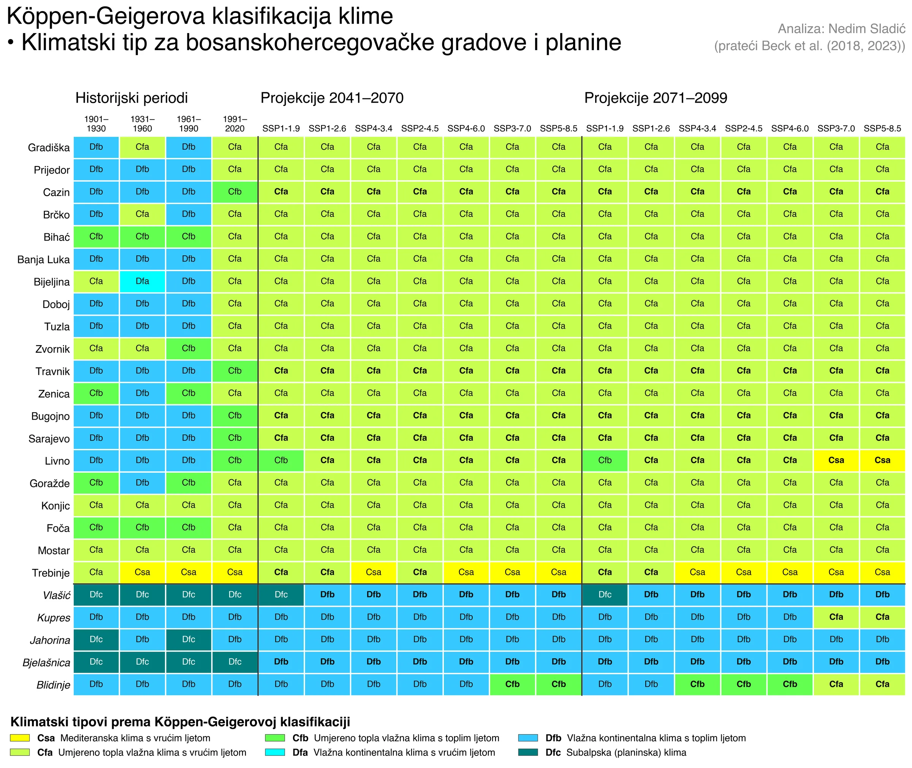
Četvrti dioPart four
DetaljiDetails
Udjeli klimatskih tipova, pouzdanost, pojedinačne karte, izvori i podaci za preuzimanje.
Shares of climate types, confidence, single maps, sources and data downloads.
1901–2099
Udio klimatskih tipova kroz vrijemeClimate type shares over time
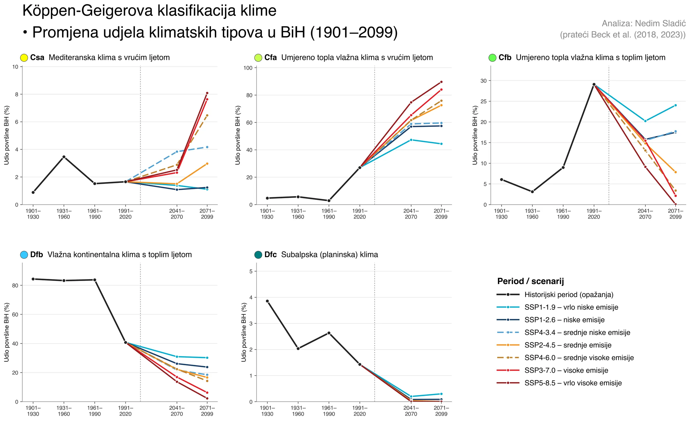
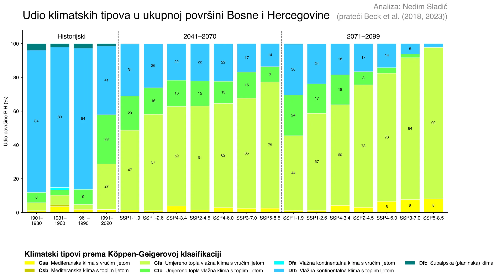
Slaganje članova ansamblaEnsemble agreement
Koliko su karte pouzdaneHow reliable the maps are
Pouzdanost pokazuje koliki se dio modela ili skupova opažanja slaže oko klimatskog tipa u svakoj ćeliji. Prosječna pouzdanost je 82–90 %; najniža je na granicama između tipova.
Confidence shows what share of models or observation datasets agree on the climate type in each cell. Average confidence is 82–90 %; it is lowest along the boundaries between types.
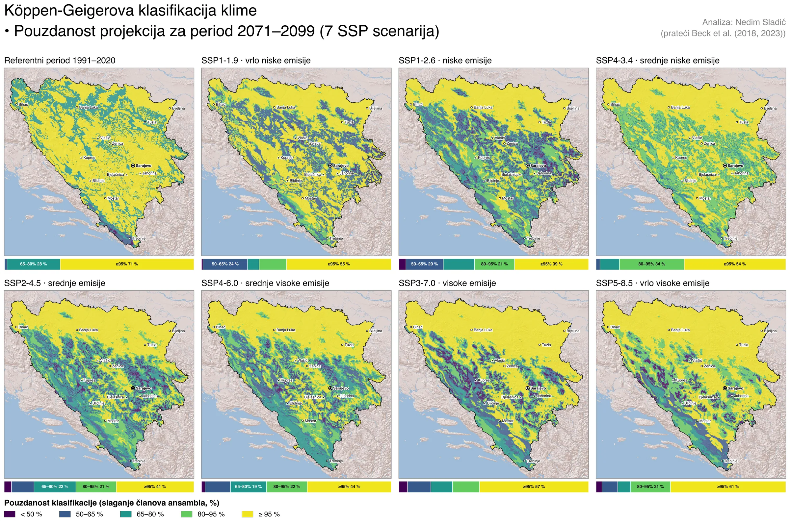
18 karata18 maps
Atlas pojedinačnih karataAtlas of single maps
MetodologijaMethods
Podaci i izvoriData and sources
- Klimatski tipovi, pouzdanost, temperatura i padavineClimate types, confidence, temperature and precipitation
- Beck, H. E. et al. (2023). High-resolution (1 km) Köppen-Geiger maps for 1901–2099 based on constrained CMIP6 projections. Scientific Data 10, 724.
- KlasifikacijaClassification
- Beck, H. E. et al. (2018). Present and future Köppen-Geiger climate classification maps at 1-km resolution. Scientific Data 5, 180214.
- Dnevne temperature i padavineDaily temperature and precipitation
- E-OBS v31.0e, 0,1° (Cornes et al., 2018). Copernicus Climate Change Service / ECA&D, za nekomercijalnu upotrebunon-commercial use.
- Broj dana u prošlosti i budućnostiDay counts in the past and future
- Metoda „delta change”: dnevne vrijednosti 1991–2020 pomjeraju se za mjesečnu promjenu temperature (padavine se množe mjesečnim omjerom) iz Beck et al. (2023). Prije 1991. to je procjena. Metoda ne mijenja dnevnu varijabilnost ni broj dana bez kiše. Delta-change method: daily 1991–2020 values are shifted by the monthly temperature change (precipitation scaled by the monthly ratio) from Beck et al. (2023). Before 1991 this is an estimate. The method keeps day-to-day variability and the number of dry days unchanged.
- OpćineMunicipalities
- Vrijednosti su prosjek za cijelu općinu, uključujući planine, pa su gradovi u dolinama nešto topliji.Values are averages over the whole municipality, mountains included, so towns in valleys are somewhat warmer.
- IsparavanjeEvapotranspiration
- Potencijalna evapotranspiracija po Thornthwaiteu iz mjesečne temperature, s indeksom topline iz 1991–2020.Thornthwaite potential evapotranspiration from monthly temperature, with the heat index from 1991–2020.
- Stanovništvo, granice i naseljaPopulation, boundaries and settlements
- WorldPop 2020 (1 km); geoBoundaries (gbOpen, ADM0 i ADM3); GeoNames (naselja, CC BY 4.0); Natural Earth (populated places); Esri World Shaded Relief.
- NesigurnostUncertainty
- Standardna devijacija ansambla iz Beck et al. (2023), prosjek mjesečnih vrijednosti za BiH.Ensemble standard deviation from Beck et al. (2023), averaged over months for BiH.